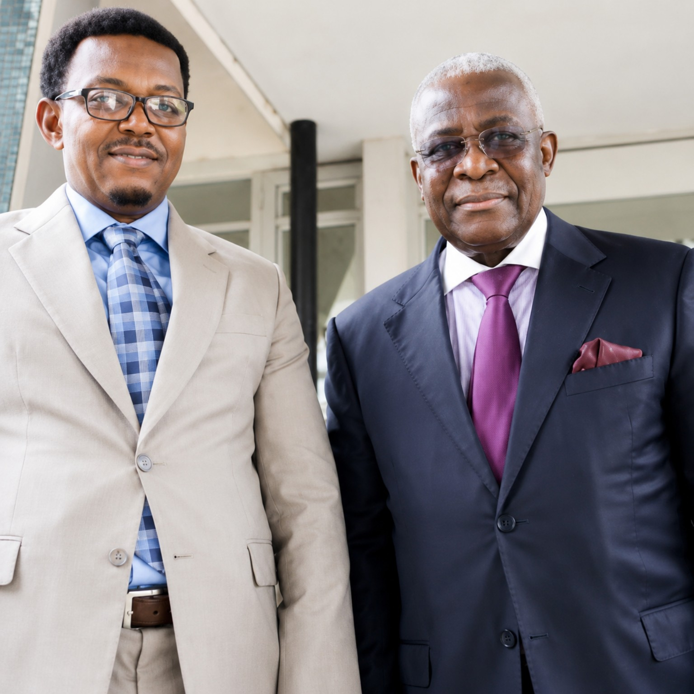

Historical ecosystem participation is preserved separately from confirmed ICERIA 2027 partnerships. Only formally confirmed 2027 partners will be labelled as current supporters.
ICERIA PARTNERS & ECOSYSTEM
Research, development and knowledge ecosystem
ICERIA’s journey has been strengthened by collaboration with research institutions, development organisations, government agencies, private-sector organisations and other stakeholders. The organisations below represent ICERIA’s historical partners and ecosystem collaborators across previous editions and activities; their inclusion does not by itself indicate a confirmed ICERIA 2027 partnership.
Historical-record notice:
These organisations are presented as documented historical partners and ecosystem collaborators. Confirmed ICERIA 2027 partners and supporters will be identified separately as formal commitments are received.
DOCUMENTED PEOPLE
Participation preserved in the ICERIA record

Bram Wits
Regional Agricultural Counsellor for West Africa, Embassy of the Kingdom of the Netherlands (West Africa regional context including Ghana). Preserved in the ICERIA 2020 visual record.

IITA participation
ICERIA 2019 included participation by IITA's communication, Business Incubation Platform and YIIFSWA-II teams.

Dr. Kanayo Nwanze
Dr. Kanayo Nwanze, former President of the International Fund for Agricultural Development (IFAD), with Jim REX-LAWSON MOSES, Founder and Promoter of ICERIA, at the inaugural edition of ICERIA in 2019.